Asistensi UMKM
2026
Asistensi UMKM Berorientasi Ekspor
Pemantauan dokumen, devisa, dan perluasan pasar ekspor UMKM.

Bea Cukai Timika — Pusat Rekapitulasi Data & Layanan Terpadu
JELAJAHI KINERJAPemantauan dokumen, devisa, dan perluasan pasar ekspor UMKM.
Monitoring NPPBKC, masa berlaku izin, dan kepatuhan pengusaha.
Rekapitulasi dokumen pendaftaran ekspor, impor, dan penjaluran.
Monitoring penanganan aduan dan kendala sistem layanan.